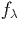
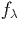
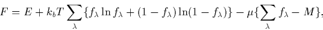
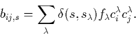

Convergence is often either slow or impossible when there is only a tiny band gap, since `charge sloshing' can occur. In one iteration electrons may transfer from a filled level to a lower energy empty level, but in doing so switch the ordering of the levels, so that in the next iteration they switch back. In such situations, or when the structural symmetry leads to degenerate levels that are only partially filled, the self-consistency fails.
In these cases it is either necessary to choose a different structure, or else `smear out' the occupation of the levels using Fermi statistics, simulating a finite temperature distribution. In practise this can often be used during optimisation and then later switched off once the structure has relaxed past the point where the levels cross.
If we say that a given level,  contains electrons, then the energy term E that is to be minimised must now
be expanded into a free energy, F containing both an entropy term
and a constraint to keep the total number of electrons fixed to M,
contains electrons, then the energy term E that is to be minimised must now
be expanded into a free energy, F containing both an entropy term
and a constraint to keep the total number of electrons fixed to M,

It is also necessary to generalise the density matrix to
|  | (41) |
In this work, kbT was always chosen to be 0.04 eV where used, and as long as the final level splitting was greater than that there is not normally any partial occupancy. Where Fermi statistics have been used it is stated in the text. Use of Fermi statistics does not always lead to the correct structures since, for example, the driving force for a Jahn-Teller distortion will be removed in this way.